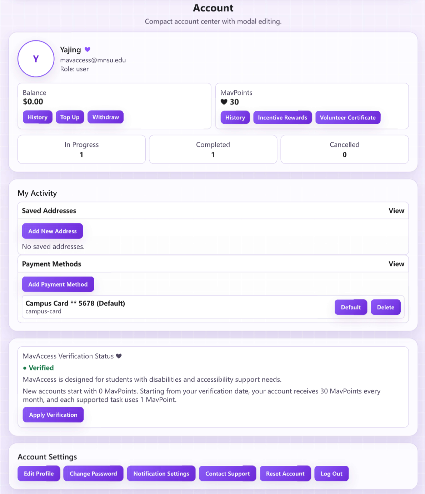
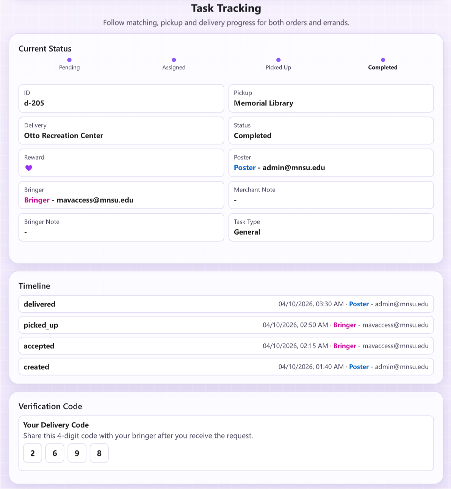

Conceptual Framing
I. Secondary Economy & Asset Activation
-
🪙 Zero Marginal Cost Tendency
Incremental service cost approaches zero.
→Highly overlapping paths make micro-transaction viable.
-
📍 Proximity-Based Efficiency
Geographic closeness eliminates intermediaries.
→Walking-distance fulfillment ensures instant response.
-
💰 Secondary Economy
Captures residual value of existing activities.
→Transforms Sunk Travel Costs into tradable logistics.
II. Circular Economy & Inclusive Growth
-
👥 Labor Fragmentation & Hyper-Flexibility
Creates campus micro-job positions with no fixed schedule constraints.
→Zero-threshold flexible income · Decentralized inclusive ecosystem.
-
💸 Cross-Subsidization
Commercial profit systematically subsidizes welfare.
→Commission funds injected into MavPoints pool · MavAccess fee waiver for students with disabilities.
-
♻️ Circular Economy
Closed-loop resource circulation reduces external dependence.
→mnsu.edu trust network · Funds and capacity retained within campus community.
III. Synchronized Dispatching in Hybrid Spaces
-
🗺️ Unified Indoor-Outdoor Modeling
Abstracts corridors, tunnels, and outdoor paths as a multi-layer weighted graph.
→Integrates Skyway and Tunnel for dynamic localized navigation.
-
⚙️ Context-Aware Algorithm
Dynamically adjusts path weights based on environmental variables.
→Extreme cold and snow automatically boost indoor route priority.
-
⏱️ Dynamic ETA Estimation
Queuing theory and dynamic traffic assignment.
→Class schedule-driven density correction · Pickup latency modeling ensures temporal feasibility.

Algorithm - Spatiotemporal Constrained Scheduling Framework
I. Foundational Implementation Modules
Module 1: Path Deviation Ratio (Spatial Feasibility)
Anchored in Time Geography - Space-Time Prism Constraint
\[\Delta = \frac{\operatorname{Dist}(A,P)+\operatorname{Dist}(P,D)+\operatorname{Dist}(D,B)-\operatorname{Dist}(A,B)}{\operatorname{Dist}(A,B)}\]
Constraint: \[\Delta \le 0.15\]
Task points P, D lie within the micro-perturbation neighborhood of Bringer's space-time prism.
Module 2: Dynamic ETA Estimation (Temporal Modeling)
Anchored in Queuing Theory and Dynamic Traffic Assignment
\[T_{extra}=T_{detour}+T_{pickup}\]
Constraint: \[T_{extra} \le T_{tolerance}\]
\[T_{detour}=\frac{\operatorname{Distance}}{\operatorname{Speed}}+P_{density}\]
Module 3: Unified Indoor-Outdoor Routing (Context-Awareness)
Anchored in Multi-layer Weighted Graph and Context-Aware Computing
\[w(e)=w_0(e)\cdot\gamma(e,\mathrm{weather})\]
\[\gamma(\mathrm{outdoor})=\begin{cases}1.5, & \text{severe weather}\\1.0, & \text{otherwise}\end{cases}\]
\[\gamma(\mathrm{indoor})=\begin{cases}0.8, & \text{severe weather}\\1.0, & \text{otherwise}\end{cases}\]
Path selected to minimize total cost under deviation constraint.

II. Matching Decision Logic
Flowchart: Three-Stage Constraint Screening
III. Evolutionary Roadmap
| Phase | Objective | Key Technology |
|---|---|---|
| Prototype | Haversine Deviation + Static ETA | Full-stack Interaction |
| Network Match | Real Walking Path Distance | Mapbox / OSRM Integration |
| Smart Dispatch | Multi-layer Graph + Climate-Adaptive | Custom Campus Graph API |

Takeaway Capsule
Condense final insights into 3-5 high-impact points that can be read quickly by passing attendees.